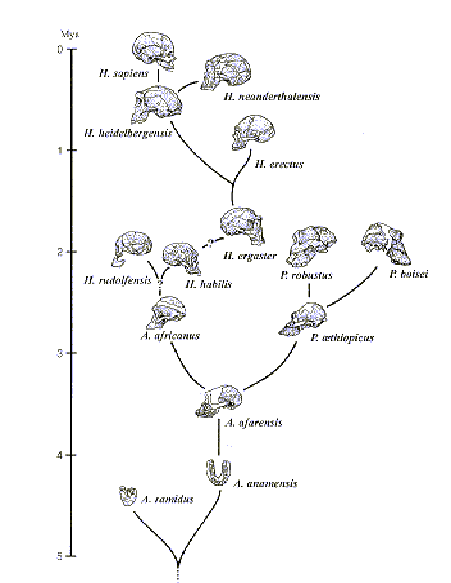

| Evolution in the News - September 1997 |
| by Do-While Jones |
The recent news reports about the relationship between Neanderthal man and modern man were based on a study by Matthias Kings, Anne Stone, Ralf W. Schmitz, Heike Kraintzki, Mark Stoneking, and Svante Pääbo that was published in a journal called Cell. They analyzed a
Neandertal sequence of the 378 base pairs of hypervariable region I of mtDNA, deduced from several short overlapping products of the polymerase chain reaction (PCR).1
Since there are about 16,500 base pairs (bp) in human mtDNA, this analysis is based on just 2% of the sequence. They weren't kidding when they said they examined a "short" sample. Furthermore, the region they picked to analyze is "hypervariable." In other words, it varies a lot in modern humans. But despite this variation, all modern humans are considered to be humans. Small variation in this region does not make one non-human. If they had found differences between Neanderthal DNA and modern DNA in a region where there is no variation in modern human DNA, then their argument would have been much stronger. Their claim that they found a small variation in a tiny fragment of the DNA sequence that is known to vary greatly in modern human beings is less than compelling evidence that Neanderthals were a separate species.
DNA is a large molecule which naturally tends to disintegrate with time, starting to degrade in just a few hours. It was recently argued that DNA had degraded so much by the time it was discovered on a famous bloody glove that it could not be identified accurately. Imagine how much it would degrade in 30,000 years. If the DNA taken from the Neanderthal bones really was 30,000 years old, shouldn't it have decomposed to the point where it could not be analyzed? How do you know that the DNA was in good enough condition to analyze? The researchers said, "Moreover, an amino acid racemization test showed that the level of hydrolytic decay of macromolecules in the sample used was low enough to be compatible with the survival of short DNA sequences-this is often not the case with ancient bones."2
Given the surprising result that the DNA had not deteriorated as much as is usually the case with ancient bones, how can we be sure that the DNA taken from the bone is actually ancient DNA? Could it not have been modern DNA that contaminated the sample? The authors of the study carefully explain that bones were coated with varnish to protect them. Their study included a table that compared the amino acids found inside the Neanderthal bone sample with the amino acids found in the varnish on it. The total amounts and percentages were significantly different. This, they say, proves that they were actually analyzing the components of ancient DNA, not modern DNA that had contaminated the sample. Modern DNA could not have passed through the varnish into the bone without leaving evidence of contamination in the varnish. Remember this. You will be tested on it later.
The article in Cell describes exactly how they extracted the short segments of DNA from the bone. The fragments they extracted weren't even 378 base pairs long. They found much smaller fragments, which they assembled into strings 378 base pairs long and "amplified" them. They say they used a "very small number of template DNA fragments, which was on the borderline of what can be reliably amplified."3 They used "primers" to splice together and amplify tiny fragments of DNA to make enough small 378 bp segments to analyze.
Everybody knows that you can amplify DNA from insects found in amber. You saw Jurassic Park, didn't you? What you might not know is that,
Occasionally, a DNA sequence could be amplified from amber, apparently independent of the presence or absence of a fossil insect, but those results were not reproducible and the DNA sequences were unrelated to the insects investigated. It is an important control that should have been carried out long ago by other workers in the field ... The inescapable conclusion from the paper by Austin et al. is that the previous reports on recovery of very ancient DNA from insects in amber can be disregarded as experimental artifacts."4
In other words, in control tests, the process sometimes put together fragments of DNA into a sequence that looks like real insect DNA even when there wasn't any insect DNA in the amber to begin with. That really isn't so surprising. Basically their analysis process is like taking letters from a bowl of alphabet soup and forming words with them. Then using these words (which amounted to only 2% of a paragraph), Kings et al. tried to determine if the bowl of soup once contained a particular paragraph. The researchers came to the conclusion that the bowl of Neanderthal alphabet soup originally contained a paragraph that is nearly (but not quite) identical to modern alphabet soup.
They did the experiment twice, two different ways. The first time they used "two primers (L16,209 H16,271) that amplify a 105-bp-segment of the human mtDNA control region (including primers)."5 They described the results in gory detail and then said,
Thus, the amplification process was composed of two classes of sequences, a minor class represented by three clones that is similar to the human reference sequence, and another class represented by 27 clones that exhibits substantial differences from it.6
In two out of 30 runs in their first test they found the Neanderthal sequence to be absolutely identical to modern man's. In one run they found only one difference. That's why they can say that 3 of the 30 sequences were similar to modern man's. That would be a remarkable success if they were trying to prove that Neanderthal was fully human.
But they weren't trying to determine if Neanderthal man was human or not. They were trying to prove that Neanderthal was a totally separate species to support the modern evolutionary dogma. So, they tried again. This time "amplifications were performed using primers that are specific for a 104 bp product of the putative ["putative" means "assumed" or "postulated"] Neandertal sequence that do not amplify contemporary human sequences."7 [emphasis supplied] Here they threw objectivity to the wind! They admitted they tried to make it impossible to get any modern DNA at all. Surprisingly, in 4 out of 14 analyses of the second sample, they found sequences identical to modern man's.8
This is not what they wanted to find, so they tried a third time. This time they extracted a sample and analyzed part of it using the first technique, and part of it using the second technique.
When the primers (L16,209 and H16,271), which had previously resulted in a product that contained both the putative Neandertal sequence and contemporary human mtDNA sequences (Figure 2) were used in amplifications from this extract, 15 of the resulting clones yielded a DNA sequence that was identical to the experimenter (A.S.) [a modern human], while two yielded sequences that differed by one and two substitutions from the reference sequence, respectively. However when primers specific for the putative Neandertal sequence (NL16,320 and NH16,262) [which aren't supposed to amplify modern DNA] were used, 5 out of 5 clones yielded the putative Neanderthal sequence (Figure 2 extract C). Thus, while this third independent extract contains a larger amount of contemporary human DNA, probably stemming from laboratory contamination, it confirms that the putative Neanderthal sequence is present in the fossil specimen.9
In other words, when they tested the third sample with human primers, they got human DNA 17 out of 17 times. When they tested the third sample with primers for the imaginary Neanderthal sequence, they got the imaginary Neanderthal results 5 out of 5 times.
At this point they should have used insect DNA primers as a control, to see if they got insect DNA, but they didn't do that. If they had, it might have been too obvious that their results "can be disregarded as experimental artifacts." Instead, they claimed that they accidentally contaminated the sample in the laboratory 17 out of 17 times when they used modern primers, but they didn't contaminate it the 5 times when they used the fictional Neanderthal primers.
How did they know which primers to use? "'The first two human primers we chose worked,' says [Dr. Mark] Stoneking [associate professor at Penn State]. 'It turns out this was a lucky choice.'"10 Well, maybe it was lucky. Maybe it just turns out that if you have enough letters in the alphabet soup you can complete any short sentence fragment you want.
The purpose of the experiment was not to find out if there were any differences between Neanderthal DNA and human DNA. The goal was to find support for the current evolutionary theory that Neanderthal man was a separate species that was not our ancestor. They didn't want to find that the Neanderthal bone had modern human DNA, so every time they found modern DNA, they cried "contamination." Did they find any contamination in the varnish that was on the bone? (We told you we would test you on this). No, they didn't. How could there be contamination inside the bone?
Early in the Cell article they went to great pains to prove that what they found in the bone was really ancient DNA, not a modern contaminant. Every precaution was taken to avoid contamination in the laboratory, and there was no evidence that any samples were contaminated.
O.J. Simpson's criminal trial lawyers claimed that the crime scene DNA samples were contaminated. The only evidence they had of contamination was the presence of Simpson's DNA in the sample. Therefore, the sample had to be contaminated. How else could it have gotten there? (Aside, of course, from the obvious possibility that he was the killer.)
The only evidence of contamination of the Neanderthal samples was the presence of modern DNA in them. Therefore, they had to be contaminated. How else could the modern DNA have gotten in there? (Aside, of course, from the obvious possibility that Neanderthals had modern DNA.)
We don't want to be too critical of King et al. They ran their experiments, got their results, and wrote an honest account of what they did, so that anyone who takes the trouble to read their report will know the truth. Then they had to write a summary with their interpretations of the results for their sponsors. They had three options.
Their first option was to say: "The test results were inconclusive. The Neanderthal DNA was too badly degraded and fragmented to make any meaningful comparison with modern DNA. We destroyed part of an irreplaceable fossil, spent every penny you gave us, and didn't learn a darn thing. We look forward to serving you again. Enclosed is our funding request for next year."
Well, maybe that wasn't really an option. Financial considerations sometimes preclude honesty when writing to sponsors.
Although they did not actually admit that they wasted part of an irreplaceable fossil, they warned others not to make the same mistake they did in the very last sentence of their report.
Thus, we strongly recommend that valuable Neandertal specimens should not be subjected to destructive sampling before the analysis of associated animal fossils, and/or the application of some other method that requires minimal destruction of the specimens (such as amino acid racemization), has yielded evidence that DNA may have survived in the fossil.11Their second option was to say this: "We took every possible precaution to assure that the Neanderthal samples were not contaminated by modern DNA. Multiple controls indicate that the Neanderthal sequences we obtained are endogenous to the fossil. In our first series of tests we successfully detected DNA sequences identical to modern man in 3 of 30 runs. In the second series of tests, despite the fact that we used primers for a 104 bp product that do not amplify modern human sequences, we successfully detected modern DNA in 4 of 14 runs. In the third test we successfully detected human DNA in 17 of 17 runs, but failed in five runs when we used inappropriate primers. In those runs where the sequences were not exactly identical, it is likely to be due to misincorporations by the DNA polymerase during PCR, possibly compounded by damage in the Neanderthal DNA. The creationists were right all along. Neanderthal man really was a contemporary race of man that has become extinct. We look forward to serving you again. Enclosed is our funding request for next year."
That summary would have assured that they never got any funding again. They had only one other choice. Regardless of the experimental results, they had to say this:
DNA was extracted from the Neandertal-type specimen found in 1856 in western Germany. By sequencing clones from short overlapping PCR products, a hitherto unknown mitochondrial (mt) DNA sequence was determined. Multiple controls indicate that this sequence is endogenous to the fossil. Sequence comparisons with human mtDNA sequences, as well as phylogenetic analyses, show that the Neandertal sequence falls outside the variation of modern humans. Furthermore, the age of the common ancestor of the Neandertal and modern human mtDNAs is estimated to be four times greater than that of the common ancestor of human mtDNAs. This suggests that Neandertals went extinct without contributing mtDNA to modern humans.12
Having successfully confirmed the orthodox evolutionary dogma (illustrated below) that Neanderthals were not our ancestors, they can confidently submit their funding request for next year.

| Quick links to | |
|---|---|
| Science Against Evolution Home Page |
Back issues of Disclosure (our newsletter) |
| Web Site of the Month |
Topical Index |
Footnotes:
1 Lindahl,
"Facts and Artifacts of Ancient DNA" (PDF)Cell, Volume 9, July 11, 1997 page 1
(Ev)
2 ibid. page 2
3 ibid. page 2
4 ibid. page 2
5 Krings et al.,
"Neandertal DNA Sequences and the Origin of Modern Humans" (PDF)Cell, Volume 90, July 11, 1997 page 20.
(Ev)
6 ibid. page 20
7 ibid. page 21
8 ibid. page 21
9 ibid. page 22
10 "DNA Shows Neandertals Were Not Our Ancestors"
http://web.archive.org/web/19971212005048/http://www.helios.org/news/25.html. (Downloaded August 4, 1997)
(Ev)
11 Krings et al.,
"Neandertal DNA Sequences and the Origin of Modern Humans" (PDF)Cell, Volume 90, July 11, 1997 page 27.
(Ev)
12 ibid. page 19